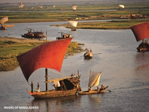
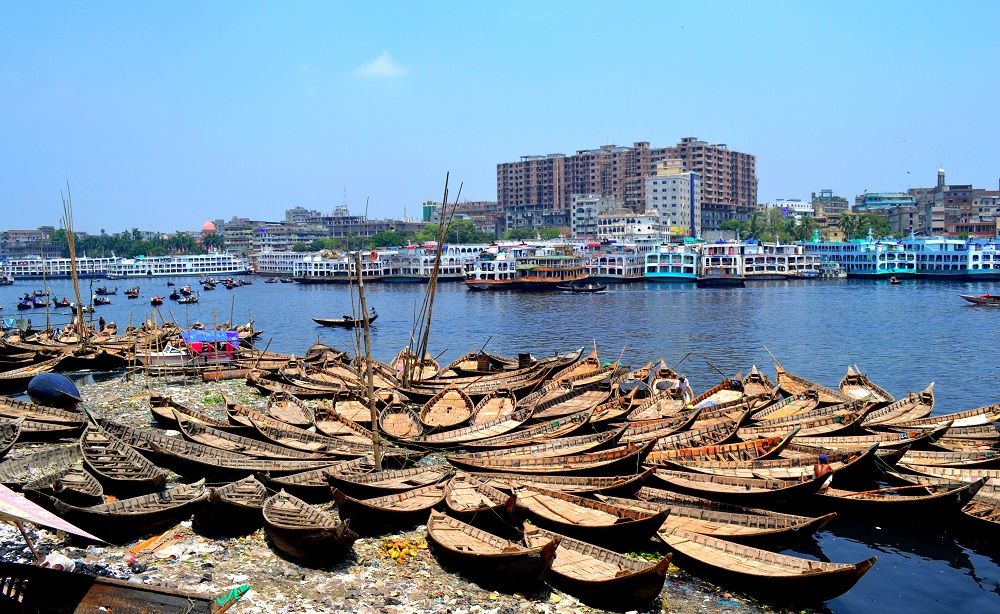

Bangladesh is a "Land of Stories". Everything of this land tells a story; a story of Bangladeshi people and their heart.
Not only the livelihood of Bangladeshi people is deeply rooted in this land,
but also their life is deeply incorporated in this lands.
This country has a very fertile alluvial soil which gives the country abundant crops every year.
These lands are like our parents, our eternal guardian who take cares of us, nurture us with providing our primitive needs.

With a grand and resourceful Bay of Bengal at its south, Bangladesh is called the land of rivers. As a riverine country,
about 700 rivers including tributaries flow through the country in which the souls and livelihood of Bangladeshi people are strongly connected.
Like so many songs and poems — which are written specially to celebrate these rivers — the majestically curvy banks or the turbulent tide of Bangladeshi rivers give the people hope and an excitement to live the best out of it. Apart from these rivers,
the country also have plenty of haors, baor, jheel, beel which strengthens our relation with more affection.
Covered with diversified natural wonders and wildlife, this country sees a wide range of Hills in the Chittagong Hill Tracts in the southeast and Sylhet division in the northeast.
What make these areas more interesting and exotic are the tribal people inhabited here for a long period of time.
The Sundarbans — home of the majestic Royal Bengal Tiger — are the largest littoral mangrove forest in the world as well as the most important and the biggest forest of Bangladesh. This land is the safest sanctuary for a diverse range of wildlife. The careless look of amazing deer, a rare glimpse or a sudden terrifying roar or even footprints of Royal Bengal Tiger on the swampy land of Sundarbans,
hiking against the bushy and thick jungles of Sundarbans etc will completely satisfy any adventure seekers.

Yes. Apart from some epic storytelling natural lands, the growing urban landscapes manifest the truly blend of modern and traditional setting of Bangladesh too. With rising architectural wonders and topnotch urban facility the country has its major urban areas in Dhaka, Chittagong, Khulna and Sylhet. Even in these urbanized areas, you will find some archeological heritages which will constantly remind us about our traditional and cultural root.
If you have been mesmerized by the stories of our rural, hilly and watery land, then you should also be amazed by the urban wonders.
Climate
Our climate, frankly, complements our lands. It completes the stories of our land. Bangladesh is not only a land of stories,
but also a land of six wonderful seasons. Seasons that will definitely excite you with their diverse characteristics.
If you haven’t had enjoyed true summer of monsoon area yet, Bangladesh is the right place to do so. A lot of activities will appear; jumping on the river, filling the tummy with mind-blowing range of seasonal fruits,
or even cooling down your body with a blissful sip from sorbet made from those heavenly fruits.
If you think rain in Bangladesh brings only water, you are completely wrong. It brings life. It brings joy to the thirsty soul of both urban and rural life. The nature gets their nectar in this season.
Dried-up ponds finally find a way to become resourceful. And our lovely people? They dance with joy to celebrate the blessings of nature.
After giving the people to celebrating their life and the nature around them with raindrops, then comes the autumn.
The heavenly clouds, floating in the clear sky that comprises thousands shades of blue, will allure you into becoming a painter.
If you are already mesmerized with the heavenly blue in autumn, do not hesitate to follow the late autumn. It is the season which brings happiness for the farmers; for their hard work all over the year. The farmers are busy with harvesting. And the women in their homes sing with joy to welcome the arrival of new crops. At the end, with dew drops this season tips off the arrival of the upcoming season winter.
With a thick blanket of fog, the winter finally arrives in Bangladesh. Even if it gets chilly with a rising urge to stay under the comfy blanket, Bangladeshi winter has plenty of stories to offer you. Freshly baked vapa pitha in front of warm cooker or a sip of freshly collected juice, a chilling walk through the fog in village area, warming sunshine from the rising sun in rural landscape, magnanimous flock of migratory birds etc. will take your breath away. Just to experience these stories you will come back here again and again.
Spring is the last season in Bengali year; but not the least. We call it the season of celebration. We celebrate the awaken nature which was frozen in winter. The presence of joy and life is everywhere. The nature blooms with various flowers. New leaves gain life in their own trees. When do you know the spring is already here? It’s simple! With sweet songs, our birds will inform you about spring.